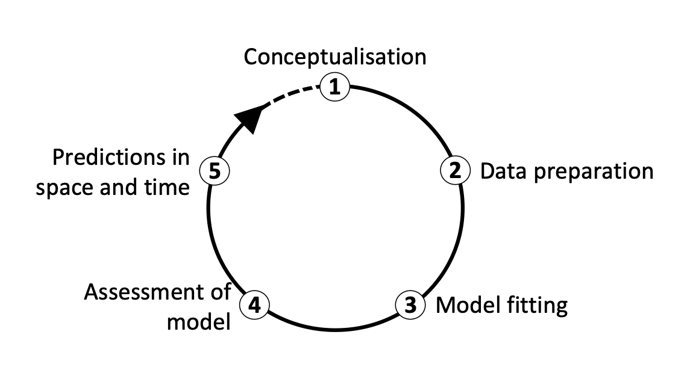
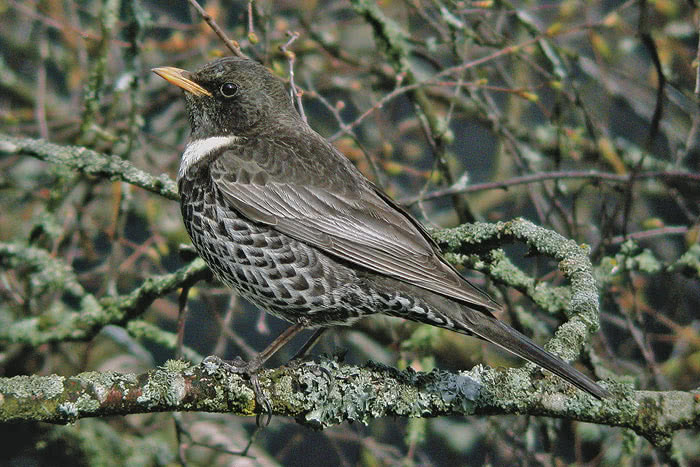
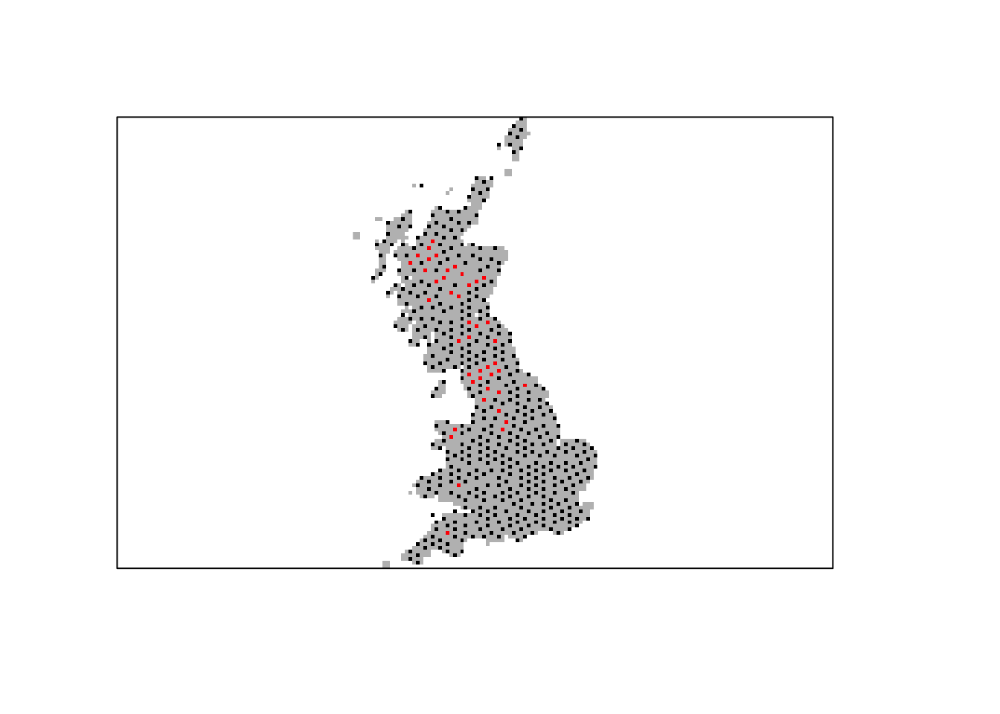
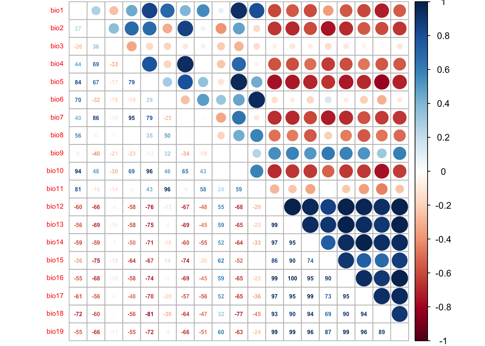

Introduction to SDMs: simple model fitting
RStudio project
Open the RStudio project that we created in the first session. I recommend to use this RStudio project for the entire course and within the RStudio project create separate R scripts for each session.
- Create a new empty R script by going to the tab “File”, select “New File” and then “R script”
- In the new R script, type
# Session 3: SDM introductionand save the file in your folder “scripts” within your project folder, e.g. as “3_SDM_intro.R”
1 Introduction
This session will introduce you to simple species distribution models (SDMs). Species distribution models (SDMs) are a popular tool in quantitative ecology (Franklin 2010; Peterson et al. 2011; Guisan, Thuiller, and Zimmermann 2017) and constitute the most widely used modelling framework in global change impact assessments for projecting potential future range shifts of species (IPBES 2016). There are several reasons that make them so popular: they are comparably easy to use because many software packages (e.g. Thuiller et al. 2009; Phillips, Anderson, and Schapire 2006) and guidelines (e.g. Elith, Leathwick, and Hastie 2008; Elith et al. 2011; Merow, Smith, and Silander Jr 2013; Guisan, Thuiller, and Zimmermann 2017) are available, and they have comparably low data requirements.
SDMs relate biodiversity observations (e.g. presence-only, presence/absence, abundance, species richness) at specific sites to the prevailing environmental conditions at those sites. Different statistical and machine-learning algorithms are available for this. Based on the estimated biodiversity-environment relationship, we can make predictions in space and in time by projecting the model onto available environmental layers (Figure 1).
![**Figure 1. Schematic representation of the species distribution modelling concept. First, biodiversity and environmental information are sampled in geographic space. Second, a statistical model (here, generalised linear model) is used to estimate the species-environment relationship. Third, the species–environment relationship can be mapped onto geographic layers of environmental information to delineate the potential distribution of the species. Mapping to the sampling area and period is usually referred to as interpolation, while transferring to a different time period or geographic area is referred to as extrapolation.**](figures/sdm.png "**Figure 1. Schematic representation of the species distribution modelling concept. First, biodiversity and environmental information are sampled in geographic space. Second, a statistical model (here, generalised linear model) is used to estimate the species-environment relationship. Third, the species–environment relationship can be mapped onto geographic layers of environmental information to delineate the potential distribution of the species. Mapping to the sampling area and period is usually referred to as interpolation, while transferring to a different time period or geographic area is referred to as extrapolation.**")
We distinguish five main modelling steps for SDMs: (i) conceptualisation, (ii) data preparation, (iii) model fitting, (iv) model assessment, and (v) prediction (Figure 2.). The last step (prediction) is not always part of SDM studies but depends on the model objective (Zurell et al. 2020). Generally, we distinguish three main objectives for SDMs: (a) inference and explanation, (b) mapping and interpolation, and (c) forecast and transfer. I recommend getting more familiar with critical assumptions and modelling decisions by studying the many excellent review articles (Guisan and Zimmermann 2000; Guisan and Thuiller 2005; Elith and Leathwick 2009) and textbooks on SDMs (Peterson et al. 2011; Franklin 2010; Guisan, Thuiller, and Zimmermann 2017).
I would also like to emphasise that model building is an iterative process and there is much to learn on the way. In consequence, you may want to revisit and improve certain modelling steps, for example improve the spatial sampling design. Because of that I like to regard model building as a cycle rather than a workflow with a pre-defined termination point (Figure 2.)(Zurell et al. 2020).

1.1 Prac overview
In this session, we will only work with Generalised Linear Models (GLMs) and concentrate on the first three model building steps (Figure 2.)
1.2 Generalised linear models (GLMs)
Why do we not simply use linear regression to fit our species-environment relationship? Well, strictly, ordinary least squares (OLS) linear regression is only valid if the response (or rather the error) is normally distributed and ranges (\(-\infty,\infty\)). OLS regression looks like this
\[E(Y|X)=\beta X+\epsilon\]
where \(E(Y|X)\) is the conditional mean, meaning the expected value of the response \(Y\) given the environmental predictors \(X\) (Hosmer and Lemeshow 2013). \(X\) is the matrix of predictors (including the intercept), \(\beta\) are the coefficients for the predictors, and \(\epsilon\) is the (normally distributed!) error term. \(\beta X\) is referred to as the linear predictor.
When we want to predict species occurrence based on environment, then the conditional mean \(E(Y|X)\) is binary and bounded between 0 (absence) and 1 (presence). Thus, the assumptions of OLS regression are not met. GLMs are more flexible regression models that allow the response variable to follow other distributions. Similar to OLS regression, we also fit a linear predictor \(\beta X\) and then relate this linear predictor to the mean of the response variable using a link function. The link function is used to transform the response to normality. In case of a binary response, we typically use the logit link (or sometimes the probit link). The conditional mean is then given by:
\[E(Y|X) = \pi (X) = \frac{e^{\beta X+\epsilon}}{1+e^{\beta X+\epsilon}}\]
The logit transformation is defined as: \[g(X) = ln \left( \frac{\pi (X)}{1-\pi (X)} \right) = \beta X+\epsilon\]
The trick is that the logit, g(X), is now linear in its parameters, is continuous and may range (\(-\infty,\infty\)). GLMs with a logit link are also called logistic regression models.
2 Conceptualisation
In the conceptualisation phase, we formulate our main research objectives and decide on the model and study setup based on any previous knowledge on the species and study system. An important point here is whether we can use available data or have to gather own biodiversity (and environmental) data, which would require deciding on an appropriate sampling design. Then, we carefully check the main underlying assumptions of SDMs, for example whether the species is in pseudo-equilibrium with environment and whether the data could be biased in any way (cf. chapter 5 in Guisan, Thuiller, and Zimmermann 2017). The choice of adequate environmental predictors, of modelling algorithms and of desired model complexity should be guided by the research objective and by hypotheses regarding the species-environment relationship. We can divide environmental variables into three types of predictors: resource variables, direct variables and indirect variables (Austin 1980; Guisan and Zimmermann 2000).
2.1 Example: Ring Ouzel
We aim at assessing potential climate change effects on the Ring Ouzel (Turdus torquatus) in UK (Figure 3), a typical upland bird. First, we try to make ourselves familiar with Ring Ouzel ecology. For example, the RSPB in UK (The Royal Society for the Protection of Birds) as well as the IUCN (Internatinal Union for the Conservation of Nature) provide some species details on their websites (RSPB, IUCN). Think about which factors could limit the distribution of Ring Ouzel in UK.

3 Data preparation
In this step, the actual biodiversity and environmental data are gathered and processed. This concerns all data that are required for model fitting but also data that are used for making transfers. In the previous sessions, you have already explored some ways to retrieve species data and environmental data. To simplify matters a little bit, I provide the processed data for this example, which you can download from here (or from the data folder in moodle). The data frame contains ring ouzel presences and absences as well as bioclimatic data.
The ring ouzel occurrence records were obtained from the British breeding and wintering birds citizen science atlas (Gillings et al. 2019). The atlas contains breeding bird records in 20-year cycles (1968-1972, 1988-1991, 2008-2011 and) wintering bird records in 30-year cycles (1981/1982-1983-1984, 2007/2008-2010/2011) at a 10 km spatial resolution throughout Britain, Ireland, the Isle of Man and the Channel Islands. The entire atlas data are available through the British Trust of Ornithology (www.bto.org) and can be downloaded here. I already extracted the confirmed breeding occurrences of the ring ouzel for the most recent atlas period 2008-2011. As absence data I used those locations where no ring ouzel occurrence was reported. Afterwards I spatially thinned the data such that all presence and absence locations are at least 20 km apart. This is important to avoid problems with spatial autocorrelation. The 19 bioclimatic variables were extracted from the worldclim data base (see detail on the variables here).
Read in the data table:
library(raster)
bg <- raster('data/Prac3_UK_mask.grd')## Warning in showSRID(uprojargs, format = "PROJ", multiline = "NO", prefer_proj =
## prefer_proj): Discarded datum OSGB 1936 in CRS definitionsp_dat <- read.table('data/Prac3_RingOuzel.txt',header=T)Inspect the data, and plot the presence and absence locations:
summary(sp_dat)## EASTING NORTHING Turdus_torquatus bio1
## Min. : 55000 Min. : 15000 Min. :0.00000 Min. : 35.72
## 1st Qu.:255000 1st Qu.: 235000 1st Qu.:0.00000 1st Qu.: 78.04
## Median :345000 Median : 405000 Median :0.00000 Median : 87.82
## Mean :354053 Mean : 469892 Mean :0.08481 Mean : 86.13
## 3rd Qu.:445000 3rd Qu.: 695000 3rd Qu.:0.00000 3rd Qu.: 96.03
## Max. :655000 Max. :1215000 Max. :1.00000 Max. :109.11
## bio2 bio3 bio4 bio5
## Min. :41.00 Min. :30.00 Min. :3069 Min. :134.0
## 1st Qu.:62.72 1st Qu.:34.00 1st Qu.:4213 1st Qu.:176.1
## Median :69.56 Median :35.26 Median :4472 Median :190.0
## Mean :67.30 Mean :35.23 Mean :4387 Mean :189.5
## 3rd Qu.:72.68 3rd Qu.:36.44 3rd Qu.:4688 3rd Qu.:206.3
## Max. :81.78 Max. :39.82 Max. :5211 Max. :230.3
## bio6 bio7 bio8 bio9
## Min. :-55.4892 Min. :129.8 Min. :-12.40 Min. : 35.62
## 1st Qu.: -4.2466 1st Qu.:178.9 1st Qu.: 41.95 1st Qu.: 60.23
## Median : 1.8448 Median :192.3 Median : 54.05 Median : 88.25
## Mean : 0.9743 Mean :188.5 Mean : 59.08 Mean : 87.43
## 3rd Qu.: 8.2466 3rd Qu.:201.5 3rd Qu.: 70.35 3rd Qu.:105.35
## Max. : 29.4952 Max. :226.1 Max. :162.00 Max. :152.06
## bio10 bio11 bio12 bio13
## Min. :102.2 Min. :-23.40 Min. : 539.7 Min. : 52.00
## 1st Qu.:132.6 1st Qu.: 26.73 1st Qu.: 694.5 1st Qu.: 72.00
## Median :145.7 Median : 34.06 Median : 881.6 Median : 95.83
## Mean :143.8 Mean : 32.14 Mean : 965.6 Mean :106.80
## 3rd Qu.:156.2 3rd Qu.: 39.06 3rd Qu.:1162.1 3rd Qu.:132.64
## Max. :173.3 Max. : 56.82 Max. :1980.9 Max. :249.98
## bio14 bio15 bio16 bio17
## Min. : 31.00 Min. : 8.00 Min. :148.5 Min. :108.0
## 1st Qu.: 44.71 1st Qu.:14.00 1st Qu.:203.9 1st Qu.:146.1
## Median : 53.36 Median :19.79 Median :278.7 Median :171.5
## Mean : 56.28 Mean :19.53 Mean :306.8 Mean :179.9
## 3rd Qu.: 64.61 3rd Qu.:25.00 3rd Qu.:387.7 3rd Qu.:202.8
## Max. :100.99 Max. :31.19 Max. :689.3 Max. :316.9
## bio18 bio19
## Min. :141.0 Min. :121.6
## 1st Qu.:169.0 1st Qu.:177.8
## Median :198.0 Median :248.1
## Mean :210.5 Mean :270.8
## 3rd Qu.:240.4 3rd Qu.:340.5
## Max. :366.2 Max. :641.4# Plot GB land mass
plot(bg,col='grey',axes=F,legend=F)
# Plot presences in red and absences in black
plot(extend(rasterFromXYZ(sp_dat[,1:3]),bg), col=c('black','red'), legend=F,add=T)
4 Model fitting
4.1 Fitting our first GLM
Before we start into the complexities of the different model fitting steps, let us look at a GLM in more detail. We fit our first GLM with only one predictor assuming a linear relationship between response and predictor. The glm function is contained in the R stats package. We need to specify a formula describing how the response should be related to the predictors, and the data specifying the data frame that contains the response and predictor variables, and a family argument specifying the type of response and the link function. In our case, we use the logit link in the binomial family.
# We first fit a GLM for the bio11 variable assuming a linear relationship:
m1 <- glm(Turdus_torquatus ~ bio11, family="binomial", data= sp_dat)
# We can get a summary of the model:
summary(m1) ##
## Call:
## glm(formula = Turdus_torquatus ~ bio11, family = "binomial",
## data = sp_dat)
##
## Deviance Residuals:
## Min 1Q Median 3Q Max
## -1.8183 -0.2813 -0.1803 -0.1157 3.1911
##
## Coefficients:
## Estimate Std. Error z value Pr(>|z|)
## (Intercept) 1.60045 0.44867 3.567 0.000361 ***
## bio11 -0.16071 0.01978 -8.126 4.44e-16 ***
## ---
## Signif. codes: 0 '***' 0.001 '**' 0.01 '*' 0.05 '.' 0.1 ' ' 1
##
## (Dispersion parameter for binomial family taken to be 1)
##
## Null deviance: 294.43 on 506 degrees of freedom
## Residual deviance: 176.39 on 505 degrees of freedom
## AIC: 180.39
##
## Number of Fisher Scoring iterations: 74.2 More complex GLMs
We can also fit quadratic or higher polynomial terms (check ?poly) and interactions between predictors:
- the term I()indicates that a variable should be transformed before being used as predictor in the formula
- poly(x,n) creates a polynomial of degree \(n\): \(x + x^2 + ... + x^n\)
- x1:x2 creates a two-way interaction term between variables x1 and x2, the linear terms of x1 and x2 would have to be specified separately
- x1*x2 creates a two-way interaction term between variables x1 and x2 plus their linear terms
- x1*x2*x3 creates the linear terms of the three variables, all possible two-way interactions between these variables and the three-way interaction
Try out different formulas:
# Fit a quadratic relationshop with bio1:
m1_q <- glm(Turdus_torquatus ~ bio11 + I(bio11^2), family="binomial", data= sp_dat)
summary(m1_q)
# Or use the poly() function:
summary( glm(Turdus_torquatus ~ poly(bio11,2) , family="binomial", data= sp_dat) )
# Fit two linear variables:
summary( glm(Turdus_torquatus ~ bio11 + bio8, family="binomial", data= sp_dat) )
# Fit three linear variables:
summary( glm(Turdus_torquatus ~ bio11 + bio8 + bio17, family="binomial", data= sp_dat) )
# Fit three linear variables with up to three-way interactions
summary( glm(Turdus_torquatus ~ bio11 * bio8 * bio17, family="binomial", data= sp_dat) )
# Fit three linear variables with up to two-way interactions
summary( glm(Turdus_torquatus ~ bio11 + bio8 + bio17 +
bio11:bio8 + bio11:bio17 + bio8:bio17,
family="binomial", data= sp_dat) )4.3 Important considerations during model fitting
Model fitting is at the heart of any SDM application. Important aspects to consider during the model fitting step are:
- How to deal with multicollinearity in the environmental data?
- How many variables should be included in the model (without overfitting) and how should we select these?
- Which model settings should be used?
- When multiple model algorithms or candidate models are fitted, how to select the final model or average the models?
- Do we need to test or correct for non-independence in the data (spatial or temporal autocorrelation, nested data)?
- Do we want to threshold the predictions, and which threshold should be used?
More detailed descriptions on these aspects can be found in Franklin (2010) and in Guisan, Thuiller, and Zimmermann (2017).
4.4 Collinearity and variable selection
GLMs (and many other statistical models) have problems to fit stable parameters if two or more predictor variables are highly correlated, resulting in so-called multicollinearity issues (Dormann et al. 2013). To avoid these problems here, we start by checking for multi-collinearity and by selecting an initical set of predictor variables. Then, we can fit our GLM including multiple predictors and with differently complex response shapes. This model can then be further simplified by removing “unimportant” predictors.
4.4.1 Correlation among predictors
We first check for pairwise correlations among predictors. Generally, correlations below |r|<0.7 are considered unproblematic (or below |r|<0.5 as more conservative threshold).
library(corrplot)
# We first estimate a correlation matrix from the predictors.
# We use Spearman rank correlation coefficient, as we do not know
# whether all variables are normally distributed.
cor_mat <- cor(sp_dat[,-c(1:3)], method='spearman')
# We can visualise this correlation matrix. For better visibility,
# we plot the correlation coefficients as percentages.
corrplot.mixed(cor_mat, tl.pos='lt', tl.cex=0.6, number.cex=0.5, addCoefasPercent=T)
Several predictor variables are highly correlated. One way to deal with this issue is to remove the “less important” variable from the highly correlated pairs. For this, we need to assess variable importance.
4.4.2 Deviance and AIC
Before we can assess univariate variable importance, we need to know how!
Basically, we want to know whether a predictor is “important”. We thus need to evaluate whether a model including this variable tells us more about the response than a model without that variable (Hosmer and Lemeshow 2013). Importantly, we do not look at the significance level of predictors. Such p-values merely tell us whether the slope coefficient is significantly different from zero. Rather, we assess whether the predicted values are closer to the observed values when the variable is included in the model versus when it is not included. In logistic regression, we compare the observed to predicted values using the log-likelihood function:
\[L( \beta ) = ln[l( \beta)] = \sum_{i=1}^{n} \left( y_i \times ln[\pi (x_i)] + (1-y_i) \times ln[1- \pi (x_i)] \right)\]
\(L( \beta )\) is the Likelihood of the fitted model. From this, we can calculate the deviance \(D\) defined as:
\[D = -2 \times L\]
This deviance is an important measure used for comparing models. For example, it serves for the calculation of Information criteria that are used for comparing models containing different numbers of parameters. Here, we will use the Akaike Information Criterion, usually abbreviated as AIC. It is defined as: \[AIC = -2 \times L + 2 \times (p+1) = D + 2 \times (p+1)\]
where \(p\) is the number of regression coefficients in the model. AIC thus takes into account model complexity. In general, lower values of AIC are preferable.
We can also use the deviance to calculate the Explained deviance \(D^2\), which is the amount of variation explained by the model compared to the null expectation: \[D^2 = 1 - \frac{D(model)}{D(Null.model)}\]
4.4.3 Univariate variable importance
Dormann et al. (2013) suggest to assess univariate variable importance in terms of AIC (Akaike information criterion) or explained deviance (in GLMs, we speak of deviance instead of variance). In practice, this means that we fit a GLM separately for each predictor, assess the importance and then rank the variables according to their univariate importance.
Earlier, we already fitted GLMs with linear and quadratic terms. We can now easily extract the AIC from the fitted model objects. Which model is better in terms of AIC?
AIC(m1) ## [1] 180.3946AIC(m1_q)## [1] 181.8804Including the possibility of a quadratic (unimodal) relationship seems sensible.
4.5 Model selection
Now that we have selected a set of weakly correlated variables, we can fit the full model and then simplify it. The latter is typically called model selection.
# Fit the full model:
m_full <- glm( Turdus_torquatus ~ bio11 + I(bio11^2) + bio8 + I(bio8^2),
family='binomial', data=sp_dat)
# Inspect the model:
summary(m_full)##
## Call:
## glm(formula = Turdus_torquatus ~ bio11 + I(bio11^2) + bio8 +
## I(bio8^2), family = "binomial", data = sp_dat)
##
## Deviance Residuals:
## Min 1Q Median 3Q Max
## -1.69015 -0.26889 -0.15746 -0.07268 3.12362
##
## Coefficients:
## Estimate Std. Error z value Pr(>|z|)
## (Intercept) 1.710e+00 7.384e-01 2.315 0.0206 *
## bio11 -7.128e-02 7.333e-02 -0.972 0.3310
## I(bio11^2) -9.897e-04 1.397e-03 -0.709 0.4786
## bio8 -4.124e-02 5.624e-02 -0.733 0.4635
## I(bio8^2) 7.039e-05 4.500e-04 0.156 0.8757
## ---
## Signif. codes: 0 '***' 0.001 '**' 0.01 '*' 0.05 '.' 0.1 ' ' 1
##
## (Dispersion parameter for binomial family taken to be 1)
##
## Null deviance: 294.43 on 506 degrees of freedom
## Residual deviance: 171.71 on 502 degrees of freedom
## AIC: 181.71
##
## Number of Fisher Scoring iterations: 8How much deviance is explained by our model? The function expl_deviance() is also contained in the mecofun package. As explained earlier, we can calculate explained deviance by quantifying how closely the model predictions fit the data in relation to the null model predictions.
# Explained deviance:
expl_deviance(obs = sp_dat$Turdus_torquatus,
pred = m_full$fitted)## [1] 0.4168184We can simplify the model further by using stepwise variable selection. The function step() uses the AIC to compare different subsets of the model. Specifically, it will iteratively drop variables and add variables until the AIC cannot be improved further (meaning it will not decrease further).
m_step <- step(m_full) # Inspect the model:
summary(m_step)##
## Call:
## glm(formula = Turdus_torquatus ~ bio11 + bio8, family = "binomial",
## data = sp_dat)
##
## Deviance Residuals:
## Min 1Q Median 3Q Max
## -1.78050 -0.27326 -0.17106 -0.08886 3.00796
##
## Coefficients:
## Estimate Std. Error z value Pr(>|z|)
## (Intercept) 1.86289 0.47867 3.892 9.95e-05 ***
## bio11 -0.11329 0.03107 -3.647 0.000266 ***
## bio8 -0.03293 0.01949 -1.690 0.091051 .
## ---
## Signif. codes: 0 '***' 0.001 '**' 0.01 '*' 0.05 '.' 0.1 ' ' 1
##
## (Dispersion parameter for binomial family taken to be 1)
##
## Null deviance: 294.43 on 506 degrees of freedom
## Residual deviance: 172.20 on 504 degrees of freedom
## AIC: 178.2
##
## Number of Fisher Scoring iterations: 7# Explained deviance:
expl_deviance(obs = sp_dat$Turdus_torquatus,
pred = m_step$fitted)## [1] 0.4151411The final model only selected the linear terms for bio11 and bio8. The explained deviance is a tiny bit lower than for the quadratic model, but the linear model is more parsimonious.
References
Austin, M. P. 1980. “Searching for a Model for Use in Vegetation Analysis.” Vegetatio 42 (October). Springer Nature: 11–21.
Dormann, C. F., J. Elith, S. Bacher, C. Buchmann, G. Carl, G. Carre, J. R. Garcia Marquez, et al. 2013. “Collinearity: A Review of Methods to Deal with It and a Simulation Study Evaluating Their Performance.” Ecography 36: 27–46.
Elith, J., and J. R. Leathwick. 2009. “Species Distribution Models: Ecological Explanation and Prediction Across Space and Time.” Annual Review of Ecology, Evolution, and Systematics 40: 677–97.
Elith, J., J. R. Leathwick, and T. Hastie. 2008. “A Working Guide to Boosted Regression Trees.” Journal of Animal Ecology 77: 802–13.
Elith, J., S. J. Phillips, T. Hastie, M. Dudik, Y. E. Chee, and C. J. Yates. 2011. “A Statistical Explanation of Maxent for Ecologists.” Diversity and Distributions 17: 43–57.
Franklin, J. 2010. Mapping Species Distributions: Spatial Inference and Prediction. Cambride University Press.
Gillings, Simon, Dawn E. Balmer, Brian J. Caffrey, Iain S. Downie, David W. Gibbons, Peter C. Lack, James B. Reid, J. Tim R. Sharrock, Robert L. Swann, and Robert J. Fuller. 2019. “Breeding and Wintering Bird Distributions in Britain and Ireland from Citizen Science Bird Atlases.” Global Ecology and Biogeography 28 (7): 866–74. https://doi.org/10.1111/geb.12906.
Guisan, A., and W. Thuiller. 2005. “Predicting Species Distribution: Offering More Than Simple Habitat Models.” Ecology Letters 8: 993–1009.
Guisan, A., W. Thuiller, and N. E. Zimmermann. 2017. Habitat Suitability and Distribution Models with Applications in R. Cambride University Press.
Guisan, A., and N. E. Zimmermann. 2000. “Predictive Habitat Distribution Models in Ecology.” Ecological Modelling 135: 147–86.
Hosmer, David W., and Stanley Lemeshow. 2013. Applied Logistic Regression. 3rd ed. John Wiley & Sons, Inc.
IPBES. 2016. The Methodological Assessment Report on Scenarios and Models of Biodiversity and Ecosystem Services. Edited by S. Ferrier, K. N. Ninan, P. Leadley, R. Alkemade, L. A. Acosta, H. R. Akcakaya, L. Brotons, et al. Secretariat of the Intergovernmental Science-Policy Platform on Biodiversity; Ecosystem Services, Bonn, Germany.
Merow, C., M. J. Smith, and J. A. Silander Jr. 2013. “A Practical Guide to Maxent for Modeling Species’ Distributions: What It Does, and Why Inputs and Settings Matter.” Ecography 36: 1058–69.
Peterson, A. T., J. Soberon, R.G. Pearson, R. P. Anderson, E. Martinez-Meyer, M. Nakamura, and M. B. Araujo. 2011. Ecological Niches and Geographic Distributions. Princeton University Press.
Phillips, S. J., R. P. Anderson, and R. E. Schapire. 2006. “Maximum Entropy Modeling of Species Geographic Distributions.” Ecological Modelling 190: 231–59.
Thuiller, W., B. Lafourcade, R. Engler, and M. B. Araujo. 2009. “BIOMOD - a Platform for Ensemble Forecasting of Species Distributions.” Ecography 32: 369–73.
Zurell, Damaris, Janet Franklin, Christian König, Phil J. Bouchet, Carsten F. Dormann, Jane Elith, Guillermo Fandos, et al. 2020. “A Standard Protocol for Reporting Species Distribution Models.” Ecography 43 (9): 1261–77. https://doi.org/10.1111/ecog.04960.